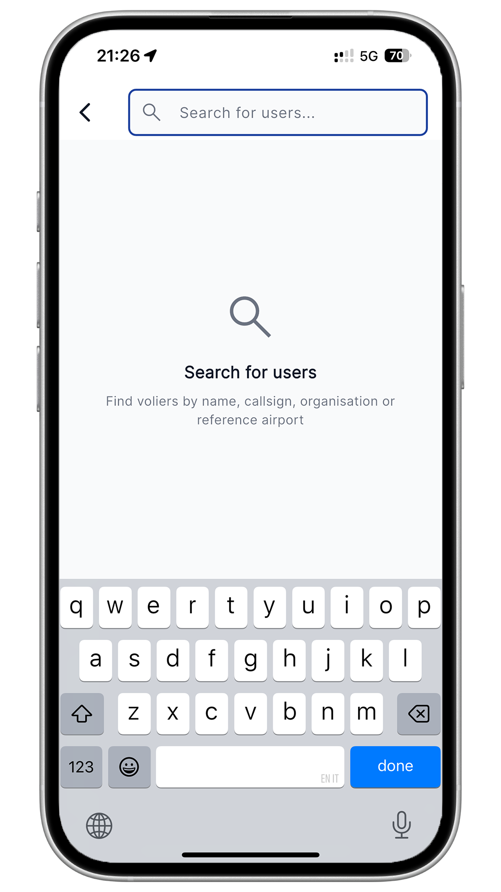

Welcome volier!
The social network for the aviation world.
Step 01
HOW TO UPLOAD
YOUR FIRST FLIGHT
02
Profile
PERSONALISE
YOUR PROFILE
Add your organisation and reference airport.
03
Search
SEARCH FOR YOUR
FRIENDS AND COLLEAGUES
